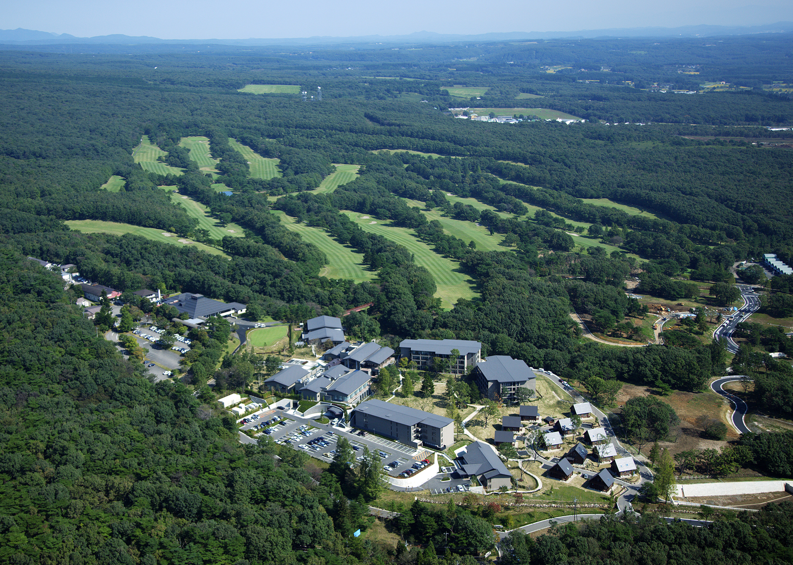
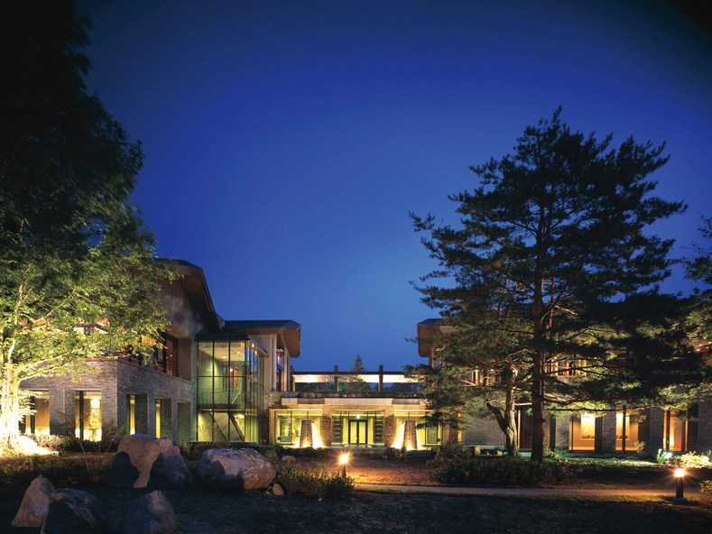

リゾート
Resorts
リゾートの実績紹介
当社独自の技術を活用し、ホテルやレジャー施設などの多彩なリゾートで、
敷地環境を尊重したランドスケープデザインを展開しています。
パラオパシフィックリゾート 水上バンガロー


竣工：2015年
所在地：Koror, Republic of Palau
事業主：パラオパシフィックリゾート
担当業務：全体監修の協力、外構造園設計
【環境と一体になれる宿泊施設】
リゾート敷地内の海上に既存の景観と調和した環境にやさしいバンガローを創出。
東急ハーヴェストクラブ京都鷹峯＆VIALA


竣工：2014年（外構造園工事）
所在地：京都府京都市
事業主：東急不動産
担当業務：設計施工（外構造園工事）
【伝統とモダンが調和した山紫水明のリゾートランドスケープ】
古来より月の名所である鷹峯を望む広大なスケールのランドスケープと、日本庭園の伝統技術が光るヒューマンスケールの景が調和するモダンなリゾート空間の設計・施工を担当。
まいぱり 宮古島熱帯果樹園
竣工：2013年
所在地：沖縄県宮古島市
事業主：東京急行電鉄
担当業務：計画、設計施工（外構造園工事）
【亜熱帯植物と果樹による観賞型観光果樹園の計画】
電動カートで遊覧するファミリー向けレジャー施設をマスタープランの作成から設計・施工までを担当。既存樹を最大限に活かし、亜寒帯の農風景と調和した景観づくり。
東急ハーヴェストクラブ熱海伊豆山
竣工：2013年（造園工事）
所在地：静岡県熱海市
事業主：東急不動産
担当業務：施工（造園工事）
【段丘型のリゾートランドスケープ】
開放感のあるオーシャンビューのテラスが特徴。エントランスにある巨大なクスノキを囲む石積みが高級感を演出する。
東急ハーヴェストクラブ那須
- 
- 
竣工：2006年（造園工事・樹木移植工事）
所在地：栃木県那須郡那須町
事業主：東急不動産
事業主：施工（造園工事・樹木移植工事）
【リゾート型の回遊式庭園】
各施設を繋ぐ回遊式庭園により、大規模ながら一体感のある外部空間を構築している。
敷地内に既存樹やTPM工法を含む移植樹木により森のリゾートホテルを実現している。
東急ハーヴェストクラブ箱根甲子園
竣工：2003年（造園工事）
所在地：神奈川県足柄下郡箱根町
事業主：東急不動産
担当業務：施工（造園工事）
【近代建築と自然環境の調和】
箱根としての環境を損なわないように自然素材による造景を行っている。
石組みによる滝や外周の石積みは地域の石を使用し、風景の溶け込みを行っている。
東急ハーヴェストクラブ旧軽井沢
竣工：2001年（外構造園工事）
所在地：長野県北佐久郡軽井沢町
事業主：東急不動産
担当業務：設計施工（外構造園工事）
【軽井沢の柔らかい自然と触れ合う】
既存木や地域の素材を有効利用することで、周囲の景観に溶け込み、周辺の野鳥などの生きものに触れ合うことができる。
建物に囲まれた中庭には流れや池を配置。
パラオパシフィックリゾート


竣工：1985年（外構造園工事）
所在地：Koror, Republic of Palau
事業主：パラオパシフィックリゾート
担当業務：企画、計画、設計施工（外構造園工事）
【パラオの自然・伝統文化を土地に因む】
パラオの自生の植物を用いるなど、パラオのすべてを土地に因んだ姿をこのリゾートにみることができる。
造園計画から施工管理までを行った。
ハウステンボス
日本造園学会賞設計作品部門受賞（1992年）


竣工：1992年
所在地：長崎県佐世保市
担当業務：企画、計画、設計施工（外構造園工事）
【エコロジーシステムを内包した水辺都市づくり】
景観計画から土壌改良計画、造園計画から造園施工、管理までをトータルエンジニアリングシステムを実現している。